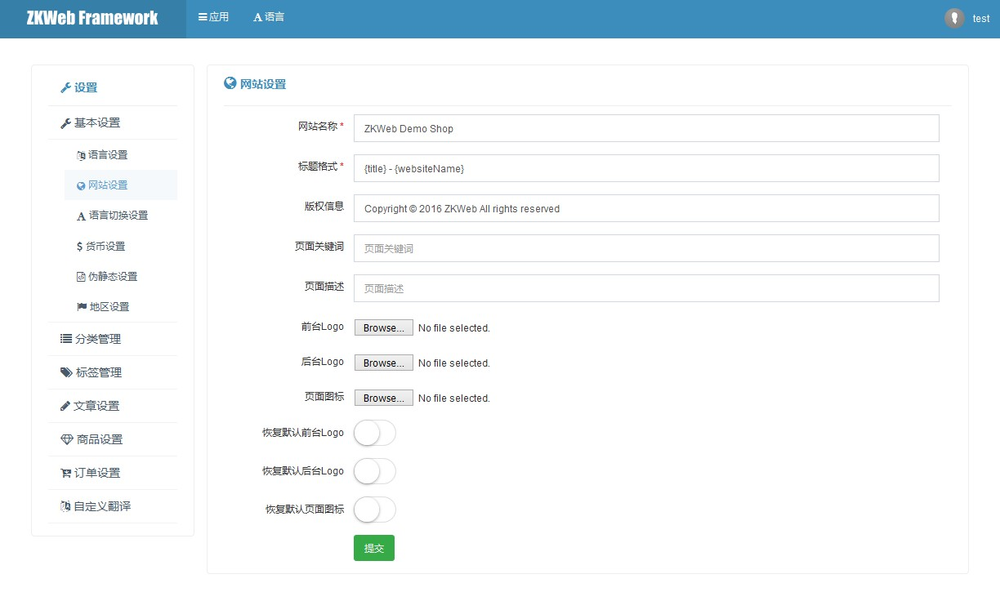

菜单页 (Common.MenuPage)
插件提供了带菜单的页面的基础模板。
菜单页的效果

菜单页的结构
菜单页分为菜单和页面内容，
其中各个菜单项的文本和图标和Url由继承了IMenuProvider的类提供，
页面内容则由继承了SimpleMenuPageBuilder或FormMenuPageBuilder等的类提供。
如何构建新的菜单页类型
这个插件仅提供了菜单页的基础类型，
当创建一个新的菜单页类型（例如后台设置或会员中心）时需要再次封装。
这里以管理后台的后台设置页为例
public interface IAdminSettingsMenuProvider : IMenuProvider { }
public abstract class AdminSettingsCrudPageBuilder<TData> : CrudMenuPageBuilder<TData>, IAdminSettingsMenuProvider { }
public abstract class AdminSettingsFormPageBuilder : FormMenuPageBuilder, IAdminSettingsMenuProvider { }
public abstract class AdminSettingsSimplePageBuilder : SimpleMenuPageBuilder, IAdminSettingsMenuProvider { }
在继承了PageBuilder的类中可以重载TemplatePath成员实现提供该菜单页默认的模板文件。
模板文件中需要对菜单内容和页面内容进行描画，这里以AdminSettingsFormPageBuilder为例。
common.admin_settings/header.html的内容
{% include common.admin/header.html %}
{% fetch /api/admin/settings/menu_groups > menu_groups %}
<div class="page-content">
<div class="panel-sidebar">
<div class="portlet">
<div class="portlet-title">
<div class="caption">
<i class="fa fa-wrench"></i>
<span class="caption-subject bold uppercase">{{ "Settings" | trans }}</span>
</div>
</div>
{% include common.menu_page/menu_groups_nav.html %}
</div>
</div>
<div class="panel-content">
common.admin_settings/generic_form.html的内容
{% use_title title -%}
{% include common.admin_settings/header.html %}
<div class="portlet">
<div class="portlet-title">
<div class="caption">
<i class="{{ iconClass }}"></i>
<span class="caption-subject">{{ title | trans }}</span>
<span class="caption-helper"></span>
</div>
</div>
<div class="portlet-body">
{{ form }}
</div>
</div>
{% include common.admin_settings/footer.html %}
在header.html模板中，菜单内容通过了/api/admin/settings/menu_groups获取，这个函数的内容如下
[Action("api/admin/settings/menu_groups")]
public IActionResult AdminSettingsMenuGroups() {
var privilegeManager = Application.Ioc.Resolve<PrivilegeManager>();
privilegeManager.Check(UserTypesGroup.AdminOrParter);
var groups = new List<MenuItemGroup>();
var handlers = Application.Ioc.ResolveMany<IAdminSettingsMenuProvider>();
handlers.ForEach(h => h.Setup(groups));
return new JsonResult(groups);
}
在完成这些工作后，需要添加新的后台设置页时只要继承AdminSettingsFormPageBuilder就可以提供一个完整的页面。